Six days on from 7/13 (day ~40 → ~46), this remains a pest-, mold-, and rot-free Papaya Crush moving deeper into ripening: pistils have visibly creamed/ambered on markedly more tops than 7/13 across every quadrant, the canopy is still fully closed through both scrog planes, and all growing points stay deep green. Direct answer on the yellowing question, now using the KB's dedicated senescence framework: this reads as normal late-flower senescence, higher confidence than 7/13. The plant is late in the cycle (day ~46, entering the ripening window), the fade is confined to old/lower/interior fan leaves with every cola and new-growth tip green above it, it is progressing slowly, and pistil ripening is advancing in parallel — that is the exact "late + slow + bottom-up + trichomes ripening" profile the senescence file says to read as fade and not treat. Two honest limits keep it short of certainty: (1) this set contains no macro single-leaf shots, so the possible-potassium serration pattern flagged 7/13 cannot be re-checked at leaf level this round, and (2) there is still no trichome-loupe data, so ripeness — and the "~1 week to harvest" figure — is inferred from pistil color, not measured. New this round: the three cross-section/side shots make the understory readable for the first time in a while — it is a bare, larfy understory with the flowering mass concentrated in the top two planes (relevant to the yield section below), the soil surface is visible and reads dry, and the interior of the canopy shows no bud-rot mush despite the density and late stage. A dedicated yield-estimate section is included as requested; the short version is a low-confidence ~3.2–5.0 oz (≈90–140 g) dried, capped on the upside by the sparse understory.
TLDR — A manual close-up check-in, nine photos: a top-down canopy, four canopy quadrants (bottom-left, top-left, top-center, top-right, bottom-right), and three cross-section/side shots (a full side profile plus a close-up right and left under-canopy cross-section). Compared against the last manual report (7/13). Two explicit asks: (1) use the up-close cross-sections for a yield estimate, and (2) give yield its own dedicated section.
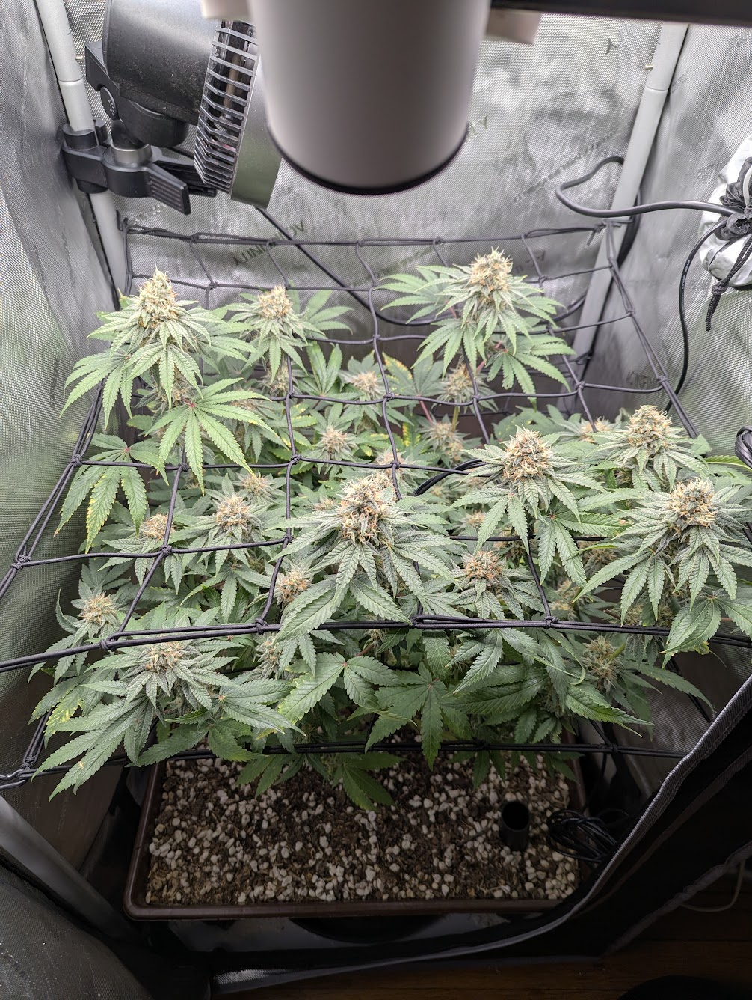
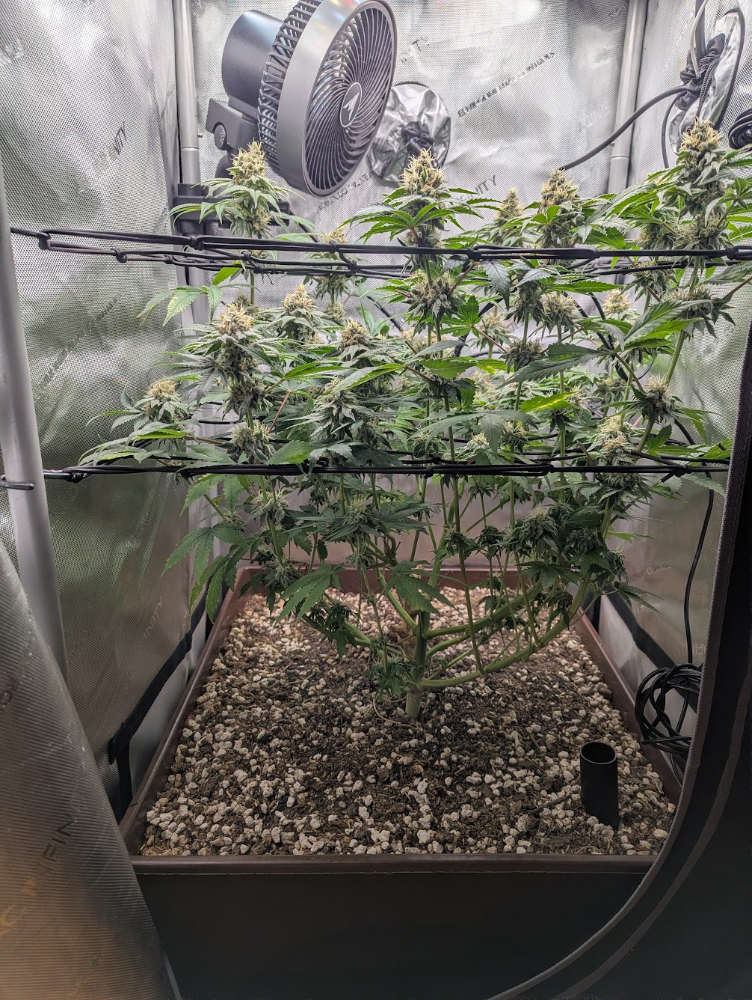
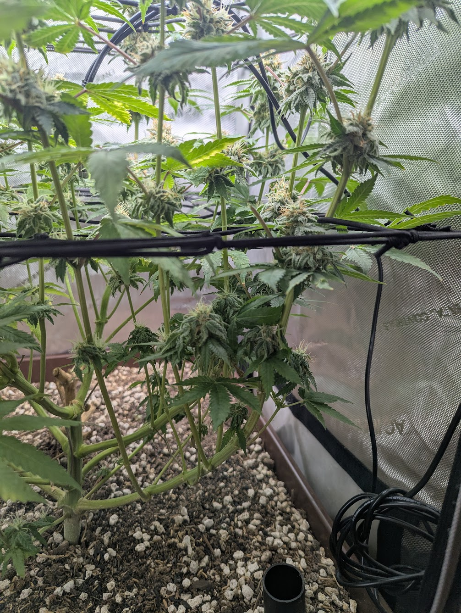
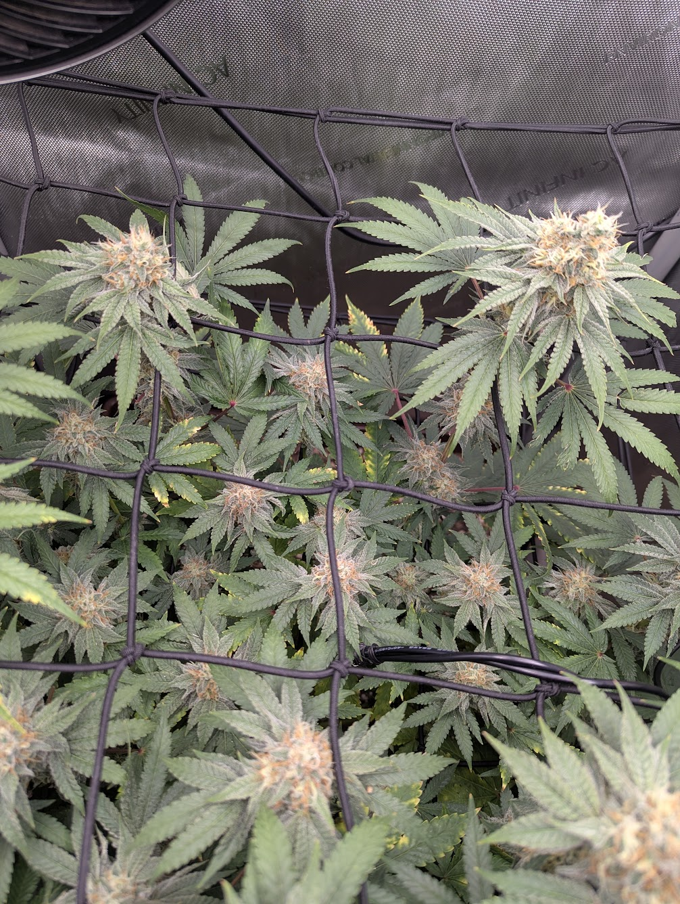
An estimate, not a precise count — roughly flat versus 7/13's ~32–45. As on 7/13, the change this late is not new sites appearing but existing tops fattening and shifting from white to creamed/amber pistils. Method unchanged: count distinct white/cream-pistil tops in the overhead/quadrant shots, cross-checked against scrog-square occupancy; the cross-sections (img 7–9) were used to bound the understory contribution rather than inflate the top count. Overlap/occlusion make an exact figure unreliable from a photo — track the trend, not the absolute. For a true count, tally physically at harvest. (See manual_report_format.md.)
Requested as its own section, and built specifically off the cross-section shots (img 7–9). Photo-based yield estimation is low-confidence by nature — the only real number comes from a scale after dry/cure — so this is a triangulated range, not a figure to bank on.
What the cross-sections establish (the key input): img 7 (side profile) and img 8–9 (under-canopy) show a two-net scrog with essentially all flowering mass in the top two planes and a bare, open, larfy understory — the main stalk and lower branches are stripped/leafless with only small popcorn buds on the interior stems (img 8). This is a well-behaved scrog structure, but it directly caps the upside: there is little secondary yield hiding below the canopy. The estimate is therefore driven by the top canopy, with only a modest larf add-on.
| Method | Inputs | Estimate (dried) |
|---|---|---|
| A · Grams per watt | SF-2000 Pro ≈ 200 W actual draw; realistic home LED + living-soil efficiency ≈ 0.4–0.7 g/W (not commercial-sealed-room numbers) | ~80–140 g |
| B · Canopy area | 2×2 = 4 ft² footprint; solid (not elite) single-plant home scrog ≈ 0.6–1.0 oz/ft² | ~68–113 g (~2.4–4.0 oz) |
| C · Cola count × per-cola | ~15–20 main tops × ~5–7 g each + understory larf ~20–35 g (bounded low by img 7–9) | ~95–160 g |
| Reconciled range | overlap of the three, weighted toward A/B given the sparse understory | ~90–140 g (~3.2–5.0 oz) |
Reading the number: for a single plant in a 2×2 on ~200 W of living soil, a central ~4 oz (~110 g) is a solid-but-modest result, consistent across all three methods. The larfy understory is the main thing holding it out of the higher band. Two adjustments to keep in mind:
Confidence: low. Methods A–C are rule-of-thumb envelopes, not measurements; grams/watt and area figures vary widely with genetics, defoliation, and finish. This range should be treated as an order-of-magnitude expectation and replaced with an actual dry weight at cure. Logged so the next report can compare.
| Signal | 7/13 (day ~40) | 7/19 (day ~46) | Trend |
|---|---|---|---|
| Pistils / ripening | A few tops beginning to cream/amber at the tips | Most tops now show substantial creamed/tan-amber pistils (img 4, 5, 6 especially) — clearly further along, ~6 days of ripening progress | ↑ ripening |
| Canopy fill | Fully solid overhead, no bare squares | Still fully solid across the top-down and all four quadrants — no regression | → steady (maxed) |
| Leaf color (tops / new growth) | Deep green on every top and new-growth tip | Still deep green at every growing point; zero chlorosis on colas or sugar leaves in any frame | → steady |
| Leaf color (old / interior fans) | ≥6 individually photographed leaves, margin-yellow up to one near-whole-leaf case; one K-pattern leaf flagged | Scattered interior/lower yellowing still present across ~4 of 6 canopy frames, moderate — but no macro leaf shots this round, so per-leaf severity and the K-pattern question cannot be re-scored. At canopy resolution it looks comparable, not dramatically worse. | → present, not re-scorable at leaf level |
| Structure / understory | Bare lower-stem zone noted from the one overview shot | Three cross-sections confirm a bare, larfy, open understory — flowering mass concentrated in the top two planes (see Yield) | → steady (as trained) |
| Posture / turgor | Turgid, flat, no claw/taco | Same — turgid and flat in all nine shots, no clawing or tacoing | → steady |
| Pests / mold / rot | Clean in 15 shots incl. 8 macro; top-surface only | No stippling, webbing, PM powder, or bud-rot mush in any of the 9 shots — and the cross-sections let the interior of the canopy be checked for rot for once (none seen). Lower photo resolution than 7/13's macro set, though. | → clear (interior now checked) |
| Soil moisture | Not assessable (no soil/side shot) | Soil surface visible in img 7 & 9 and reads dry on top; last watered 7/16 (2 gal), so ~3 days into the ~4-day cycle | readable this round; due/near-due for water |
| Cola / yield estimate | ~32–45 sites | ~32–46 sites; first dried-yield estimate ~90–140 g (~3.2–5.0 oz) | → flat count; yield quantified |
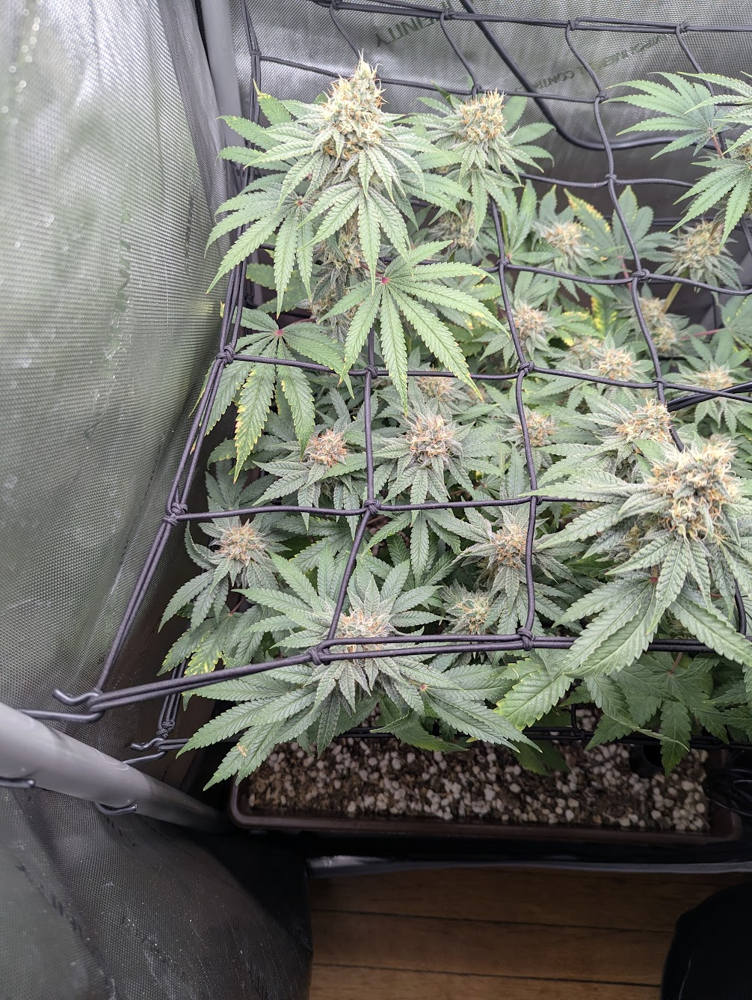
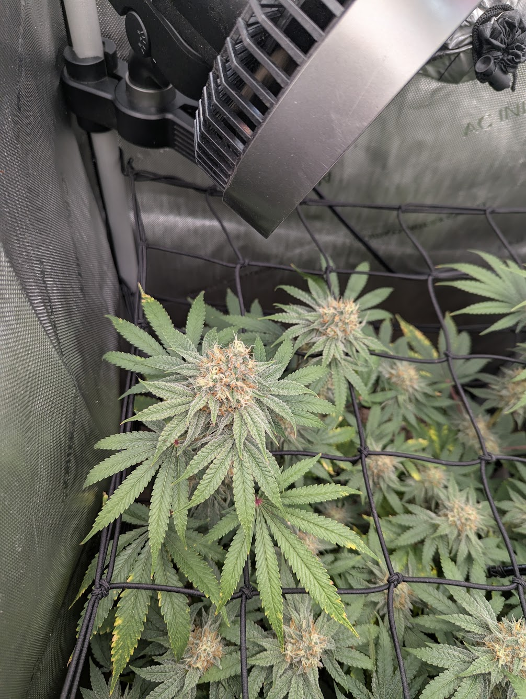
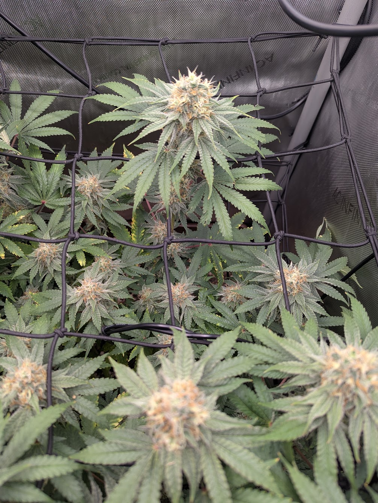
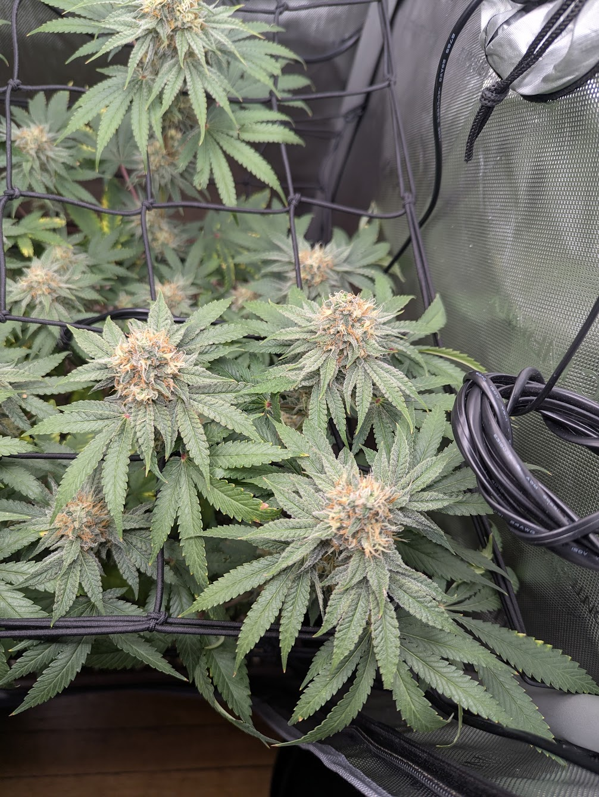
All five canopy regions read healthy at the growing points: deep green, frosty, dense creaming pistil clusters, no webbing/stippling/powder/mush. The only recurring finding is the same old/interior-fan yellowing addressed below, visible in small amounts in roughly four of the six frames — a real, canopy-wide pattern on old growth, not a cherry-picked leaf. Relative to 7/13 the standout change is pistil maturity: creaming/ambering is now the majority state on the photographed tops rather than a few tips.
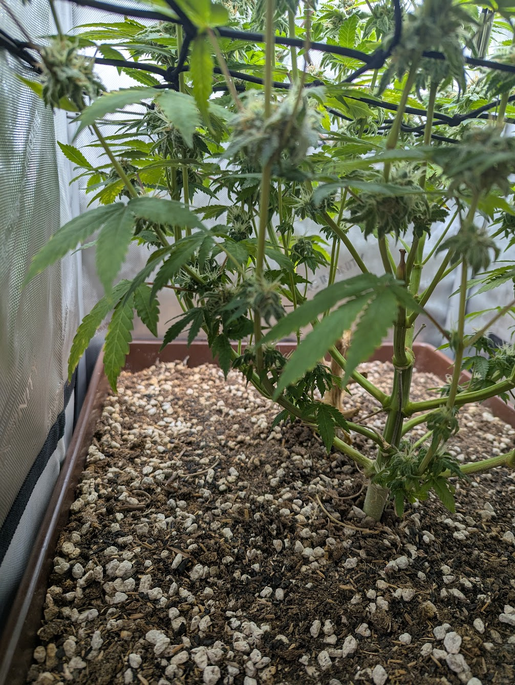
The cross-sections are the new information this round and drive the yield section. They confirm a textbook scrog structure — energy pushed into the top canopy, understory bare and larfy — with a thick, upright, healthy main stalk and no lodging. Two secondary reads they enable that the quadrant shots could not: the interior of the canopy is visible and shows no bud-rot mush at the bud bases (worth confirming by hand given the density and late stage), and the soil surface is visible and reads dry on top. Per the no-till approach for this grow, the bare lower stems and root crown are left in place — no cleanup is warranted or suggested.
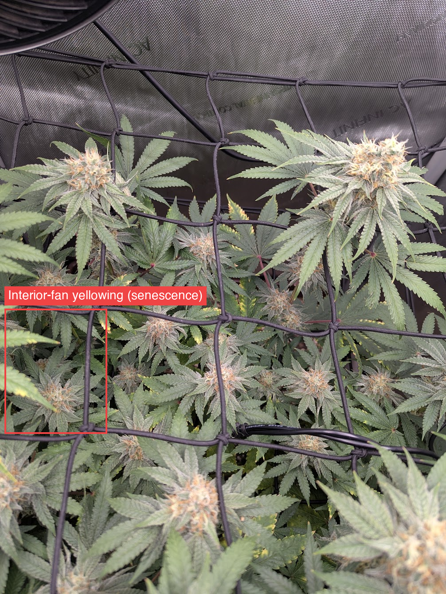
Is it senescence? Yes — higher confidence than 7/13, now read against the KB's dedicated senescence framework (16-senescence.md16 · Senescence (natural fade) — and how to tell it from a problemLate-life yellowing of a cannabis plant is often not a deficiency. It is senescence: an evolved, age-programmed shutdown in which the plant strips nutrients out of old leaves and moves them into the buds. The diagnostic problem is that senescence and a real deficiency share the same mechanism and the same look, so the…Covers: What senescence actually is (mechanism) · Timeline by plant age · Distinguishing senescence from the look-alikes · Deliberate "fade" / flushing — folklore vs evidence · Age-based decision rulesGrowBuddy knowledge base · 16-senescence.md). All four of its age-based criteria are met: (1) late — day ~46 of flower, in the ripening window; (2) bottom-up — every affected leaf is an old/lower/interior fan, with all colas and new growth deep green above; (3) slow — no rapid or whole-plant spread; (4) trichomes/ripeness advancing — pistils creaming in parallel. That is the file's "natural fade, do not treat" profile, reinforced by the grow being living soil where the plant finishes on its own (07-organic-living-soil.md07 · Organic / Living Soil / No-TillA living-soil grow is a different system from bottled-nutrient growing, and most generic diagnosis advice gives the wrong fix here. If the grow is living soil / no-till, read this before recommending anything.Covers: The core idea · How feeding/correcting works (and what NOT to say) · Diagnosis differences in living soil · Practical no-till setup & routine (real-world basics) · Practical rule for the diagnoserGrowBuddy knowledge base · 07-organic-living-soil.md, 06-grow-cycle.md06 · Grow Cycle — What's Normal WhenKnowing the stage prevents false alarms (e.g., late-flower leaf fade is normal, not a deficiency — see 16 · Senescence) and sets expectations. Timelines are typical photoperiod ranges; genetics vary.Covers: Stages · Photoperiod vs Autoflower (critical distinction) · Whole-plant & structural issues (not a leaf symptom) · Harvest timing (trichomes)GrowBuddy knowledge base · 06-grow-cycle.md).
The honest limit: 7/13 flagged a serration-margin pattern on a few leaves that the KB lists as an early potassium tell, distinct from plain nitrogen fade. This set has no macro single-leaf shots, so that specific pattern cannot be re-checked this round — the senescence read is made at canopy level, not leaf level. Per 16-senescence.md16 · Senescence (natural fade) — and how to tell it from a problemLate-life yellowing of a cannabis plant is often not a deficiency. It is senescence: an evolved, age-programmed shutdown in which the plant strips nutrients out of old leaves and moves them into the buds. The diagnostic problem is that senescence and a real deficiency share the same mechanism and the same look, so the…Covers: What senescence actually is (mechanism) · Timeline by plant age · Distinguishing senescence from the look-alikes · Deliberate "fade" / flushing — folklore vs evidence · Age-based decision rulesGrowBuddy knowledge base · 16-senescence.md, the correct action at ~1 week out is monitoring, not feeding: even a genuine mild K draw is not worth chasing this late in living soil, and the tops/cola sugar leaves staying green is the signal to watch (they are).
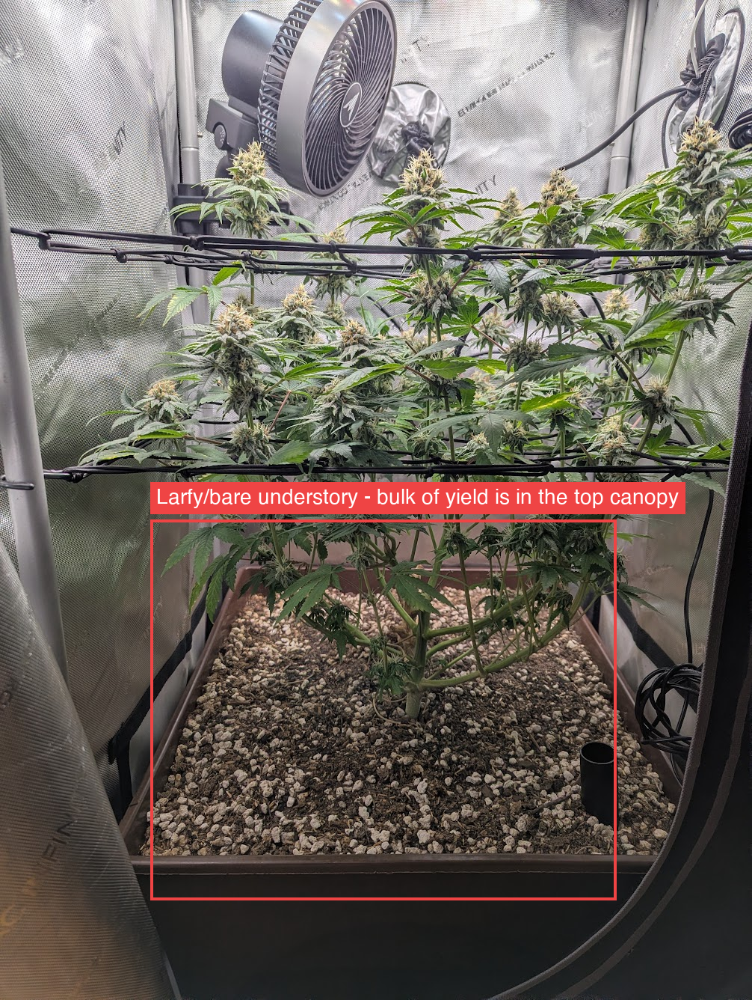
Sources: knowledge_base framework (01), environmental/watering (03), pests (04), diseases (05), grow cycle (06), organic/living-soil (07), senescence (16), and the Papaya Crush strain file. Comparison baseline: manual-report 2026-07-13.
On track and ripening. At day ~46, roughly a week from the grower's target, this is a pest-, mildew-, and rot-free Papaya Crush with a fully closed frosty canopy and clearly more pistil creaming/ambering than 7/13 — real progress in six days. The interior-fan yellowing this series has tracked reads as ordinary late-flower senescence at higher confidence than 7/13, because it now satisfies all four age-based criteria in the KB's senescence file: late in the cycle, strictly bottom-up on old leaves, slow, and coincident with advancing pistil ripeness, in a living-soil grow that finishes itself. That confidence is capped, not absolute: no macro leaf shots this round means the 7/13 possible-potassium leaf pattern was not re-checked, and no trichome data means the harvest date is still inferred from pistil color. The requested yield estimate, built off the cross-sections, is a low-confidence ~3.2–5.0 oz (~90–140 g) dried, central ~4 oz — a solid single-plant 2×2 result held out of the higher band by the sparse, larfy understory. The next-week priorities are trichome checks and a hands-on interior/soil check, not any feeding change this late.